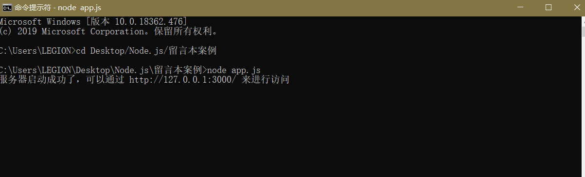
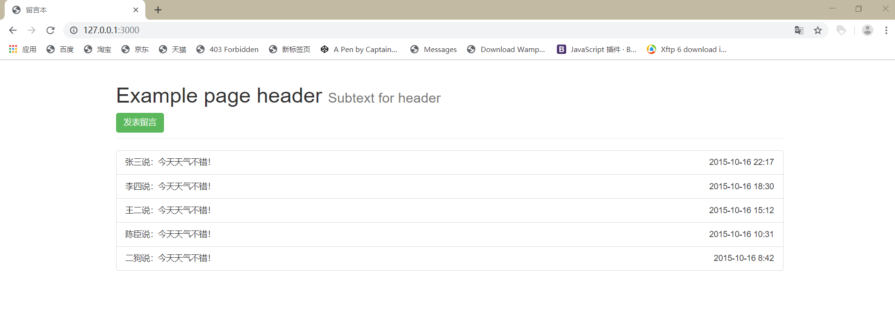
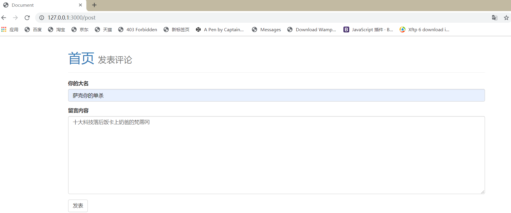
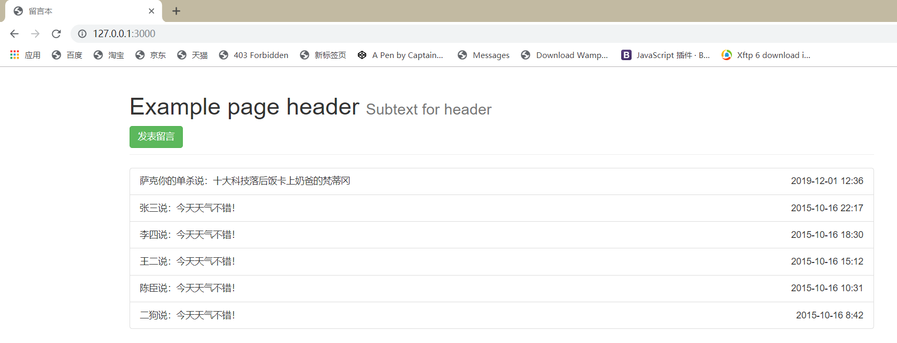

在还没有正式的学Node.js的时候， 你们认为Node.js 对于前端来说是什么呢？
会认为Node.js 是框架？ 认为这是类似Jquery的一个快速、简洁的JavaScript框架？ 反正我自己起初是这么认为的，因为它后面有个 .js。
那么在正式开始接触Node.js的时候，才发现自己是有多么愚蠢。在进入了Node.js的官网后，看完对Node的介绍一后才发现 Node 和 Js 都好猛啊。
官方对Node.js就简单的一句话：（Node.js® is a JavaScript runtime built on Chrome's V8 JavaScript engine.） Node.js 是一个基于 Chrome V8 引擎的 JavaScript 运行时。
在看完这个介绍的时候反正起初是懵逼的，因为我压根不了解 什么叫 基于 Chrome V8 引擎的 JavaScript 运行时，然后我关顾各个大佬的博客来看看大佬们对Node.js的理解后，初步在自己头脑有了对Node.js有了大概的概念。 Node.js就是一款工具 一个基于 Chrome V8 引擎的 在 服务端 运行JavaScript代码的工具。 说白了就是 为了给JavaScript 在服务端运行提供了一个环境。
了解完Node.js后，就开始在网上找了个教学视频简单的学习下Node.js并且做了个简单的留言本案例
app.js （这个 js 脚本是在服务端运行的 和 浏览器的 js 不同 没有DOM BOM）
1 var http = require('http')
2 var fs = require('fs')
3 var template = require('art-template')
4 var url = require('url')
5 // silly-datetime 模块 可以获取当前时间
6 var time = require('silly-datetime')
7 var comments =[
8 {
9 name: '张三',
10 message: '今天天气不错！',
11 dateTime: '2015-10-16 22:17'
12 },
13 {
14 name: '李四',
15 message: '今天天气不错！',
16 dateTime: '2015-10-16 18:30'
17 },
18 {
19 name: '王二',
20 message: '今天天气不错！',
21 dateTime: '2015-10-16 15:12'
22 },
23 {
24 name: '陈臣',
25 message: '今天天气不错！',
26 dateTime: '2015-10-16 10:31'
27 },
28 {
29 name: '二狗',
30 message: '今天天气不错！',
31 dateTime: '2015-10-16 8:42'
32 }
33 ]
34 // 对于我们来讲，其实只需要判定，如果你的请求路径是 /pinglun 的时候，那我就认为你提交表单的请求过来了
35 http.createServer(function(req,res) {
36 // 使用 url.parse 方法将路径解析为一个方便操作的对象，第二个参数为 true 表示直接将查询字符串转为一个对象（通过 query 属性来访问）
37 var parseObj = url.parse(req.url, true)
38 // 单独获取不包含查询字符串的路径部分（该路径不包含 ? 之后的内容）
39 var pathname = parseObj.pathname
40 if( pathname === '/') {
41 fs.readFile('./views/index.html', function(err,data) {
42 if(err) {
43 return res.end('404 Not Found')
44 }else {
45 var htmlStr = template.render(data.toString(),{
46 comments:comments
47 })
48 res.end(htmlStr)
49 }
50 })
51 // /public 整个 public 目录中的资源都允许被访问
52 // .indexOf()方法 检测 请求地址url中 有没有是 /public 开头的 ===0 如果有执行里面的代码
53 // 例如： 请求路径是： http://127.0.0.1:3000/public/......
54 }else if(pathname === '/post') {
55 fs.readFile('./views/post.html', function(err,data) {
56 if(err) {
57 return res.end('404 Not Found')
58 }else {
59 res.end(data)
60 }
61 })
62 }else if(pathname.indexOf('/public/') === 0) {
63 // /public/css/main.css
64 // /public/js/main.js
65 // /public/lib/jquery.js
66 // 统一处理：
67 // 如果请求路径是以 /public/ 开头的，则我认为你要获取 public 中的某个资源
68 // 所以我们就直接可以把请求路径当作文件路径来直接进行读取
69
70 fs.readFile('.' + pathname, function(err,data) {
71 if(err) {
72 return res.end('404 Not Found')
73 }else {
74 res.end(data)
75 }
76 })
77 }else if(pathname === '/pinglun') {
78 // 1. 获取表单提交的数据 parseObj.query
79 // 2. 将当前时间日期添加到数据对象中，然后存储到数组中
80 // 3. 让用户重定向跳转到首页 /
81 // 当用户重新请求 / 的时候，我数组中的数据已经发生变化了，所以用户看到的页面也就变了
82 var comment = parseObj.query
83 // 获取当前时间
84 comment.dateTime = time.format(new Date(), 'YYYY-MM-DD HH:mm')
85 // .push()方法 追加到数组的末尾 .unshift()方法追加到数组的开头
86 comments.unshift(comment)
87 // comments.push(comment)
88
89 // 服务端这个时候已经把数据存储好了，接下来就是让用户重新请求 / 首页，就可以看到最新的留言内容了
90
91 // 如何通过服务器让客户端重定向？
92 // 1. 状态码设置为 302 临时重定向
93 // statusCode
94 // 2. 在响应头中通过 Location 告诉客户端往哪儿重定向
95 // setHeader
96 // 如果客户端发现收到服务器的响应的状态码是 302 就会自动去响应头中找 Location ，然后对该地址发起新的请求
97 // 所以你就能看到客户端自动跳转了
98 res.statusCode = 302
99 // 就去请求路径是 / 的页面
100 res.setHeader('Location', '/')
101 res.end()
102 }
103 else {
104 // 其它的都处理成 404 找不到
105 fs.readFile('./views/404.html', function(err,data) {
106 if(err) {
107 return res.end('404 Not Found')
108 }else {
109 res.end(data)
110 }
111 })
112 }
113 })
114 .listen(3000, function() {
115 console.log('服务器启动成功了，可以通过 http://127.0.0.1:3000/ 来进行访问');
116 })index.html页面是留言本案例的首页（当点击发布留言会跳转post.html页面中）
1 <!DOCTYPE html>
2 <!-- saved from url=(0027)http://192.168.150.76:3000/ -->
3 <html lang="en">
4 <head>
5 <meta http-equiv="Content-Type" content="text/html; charset=UTF-8">
6 <title>留言本</title>
7 <link rel="stylesheet" href="/public/lib/bootstrap/bootstrap.css">
8 <link rel="stylesheet" type="text/css"
9 href="chrome-extension://fidicgekecdkdmkjghdgadgdmcfodfid/themes/default/content.css">
10 </head>
11 <body>
12 <!-- <img src="/public/img/ab3.jpg" style="width:189px; height:126px"> -->
13 <div class="header container">
14 <div class="page-header">
15 <h1>Example page header <small>Subtext for header</small></h1>
16 <!-- <a class="btn btn-success" href="http://192.168.150.76:3000/post">发表留言</a> -->
17 <a class="btn btn-success" href="/post">发表留言</a>
18 </div>
19 </div>
20 <div class="comments container">
21 <ul class="list-group">
22 <!-- <li class="list-group-item">1</li>-->
23 <!-- 模板引擎 -->
24 {{each comments}}
25 <li class="list-group-item">{{$value.name}}说：{{$value.message}}<span class="pull-right">{{$value.dateTime}}</span></li>
26 {{/each}}
27 </ul>
28 </div>
29 </body>
30 </html>post.html是写留言的页面（当填写完留言后，点击发表会将发表的内容在首页更新并且跳转到首页查看更新后的页面）
1 <!DOCTYPE html>
2 <html lang="en">
3 <head>
4 <meta charset="UTF-8">
5 <title>Document</title>
6 <link rel="stylesheet" href="/public/lib/bootstrap/bootstrap.css">
7 </head>
8 <body>
9 <div class="header container">
10 <div class="page-header">
11 <h1><a href="/">首页</a> <small>发表评论</small></h1>
12 </div>
13 </div>
14 <div class="comments container">
15 <form action="/pinglun" method="get">
16 <div class="form-group">
17 <label for="input_name">你的大名</label>
18 <input type="text" class="form-control" required minlength="2" maxlength="10" id="input_name" name="name"
19 placeholder="请写入你的姓名">
20 </div>
21 <div class="form-group">
22 <label for="textarea_message">留言内容</label>
23 <textarea class="form-control" name="message" id="textarea_message" cols="30" rows="10" required minlength="5"
24 maxlength="20"></textarea>
25 </div>
26 <button type="submit" class="btn btn-default">发表</button>
27 </form>
28 </div>
29 </body>
30 </html>404.html（没有什么说的点）
1 <!DOCTYPE html>
2 <html lang="en">
3 <head>
4 <meta charset="UTF-8">
5 <title>404</title>
6 </head>
7 <body>
8 <h1>404 您访问的页面失联啦...</h1>
9 </body>
10 </html>
使用电脑的 cmd（命令提示符）启动 app.js（此时就相当于开启了一个web服务器）

通过 http://127.0.0.1:3000/ 或者填写本机的ip地址 在浏览器访问 就可以看到 index.html页面

点击发布留言后会跳转到 post.html中

点击发表后会自动跳转到index.html页面并且留言内容会更新

这就是整个留言本案例的基本功能，我也是跟着别人的教学一步步做的感觉功能基本实现了，就差数据库来保存数据了，但通过这个案例基本对Node.js就会有更深的认识了。
2019-12-01 12:40:34